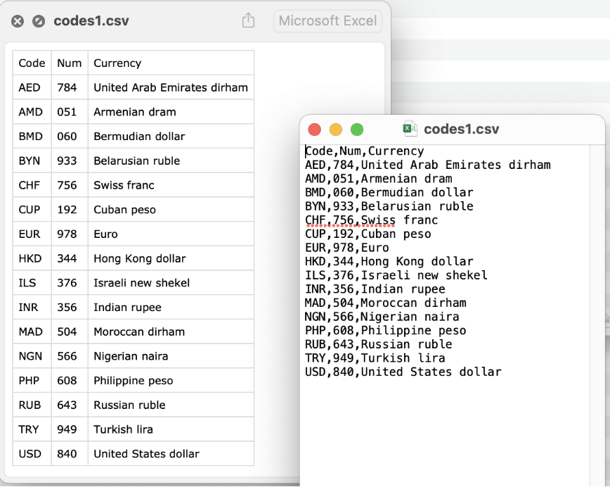

Режимы открытия файлов. Работа с форматами csv, json, xml, yaml
Функция open() для чтения и записи файлов
Скрипт, который пишет программист, чаще всего взаимодействует с операционной системой и файлами, которые в ней находятся. Поэтому файлы и данные, которые они содержат, очень полезны. В зависимости от расширения файла, интерпретатор Python может взаимодействовать с ним по разному с учетом выбранного режима.
Файл — это упорядоченная совокупность байтов, которая хранится на диске. Его можно открыть для чтения и прочитать в память содержимое. Функция open() считывает файл как объект.
Режим чтения
Вместе с функцией open() необходимо указать:
- Путь до указанного файла
"yesterday.txt"в виде строки. - Параметр
r— чтение в текстовом режиме. - Метод
read()— получить содержимое файла. - Метод
close()— закрыть файла, чтобы очистить буфер.
Скачать файл "yesterday.txt" можно по ссылке.
Бинарное чтение
В результате открытия файла в режиме бинарного чтения в выводе можно увидеть все управляющие символы, например перенос строки \n. Параметр rb — бинарное чтение
## открытие файлов с ASCII2
file = open('yesterday.txt', mode='rb')
file_content = file.read()
file.close()
print(file_content)
Однако если открыть в бинарном режиме файл, содержащий кириллицу, то при выводе на экран получится набор шестнадцатеричных кодов. Символы, входящие в ASCII2, отображаются так как есть.
Скачать файл "borodino.txt" можно по ссылке.
## открытие файлов с кириллицей
file = open('borodino.txt', mode='rb')
file_content = file.read()
file.close()
print(file_content)
Запись содержимого
Режим записи w позволяет сохранять содержимое буфера в новый файл. Если в текущем каталоге уже есть файл с тем же именем, то при открытие в режиме w содержимое существующего файла стирается. Учитывайте, что имя файла может быть с путем по файловой системе. Если путь не указан — то ищется в рабочей директории скрипта. Если файл не найден, возникает исключение FileNotFoundError.
Также существует запись в бинарном режиме — wb
Другие режимы открытия файлов
В существующие файлы можно добавлять строки, используя режим а. При этом информация добавляется в конец файла. Для открытого объекта файла можно вызывать метод файла для записи.
file = open('out.txt', mode='a')
file_content = 'How are you? '
file.write(file_content)
file.close()
Для того, чтобы прочитать и добавить в файл, можно использовать режим чтения с записью r+.
file = open('yesterday.txt', mode='r+')
file_content = file.read()
file.write('\nBeatles!')
file.close()
pprint(file_content)
Наоборот, записать и прочесть файл, можно с помощью режима w+.
file = open('out.txt', mode='w+')
file_content = file.read()
file.write('Next Song – Yellow Submarine')
file.close()
pprint(file_content)
Оператор with
Как в потоке программы можно открыть файл? Для этого используют несколько форм работы с файлами.
Вариант №1. Чтение построчно
Файл можно прочитать построчно с помощью цикла, перебрав объект. Чтение происходить из буфера по одной строчке. Если буфер переполнен то, следующий кусочек файла считывается с диска. Выгодно, если файл большого объема.
Вариант №2. С помощью readlines
Метод readlines() представляет каждую строку, как элемент списка. В результате доступность к строкам растет. Однако, если файл объемный, то весь объект документа сразу выгрузится в память. Это не производительно! Желательно использовать только для небольших файлов.
file = open('yesterday.txt', mode='r',
encoding='utf8')
for line in file.readlines():
print(line)
file.close()
Вариант №3. Применение цикла while
Каждую строчку можно проверить на условие. Читаем построчно, до тех пор пока не выполнится условие. Чтобы не читать файл полностью, можно воспользоваться оператором break.
file = open('yesterday.txt', mode='r', encoding='utf8')
line = True
while line:
line = file.readline()
if 'easy game' in line:
print('Good Game, Well Played')
break
else:
print('There is no game to play!')
file.close()
Зачем закрывать файлы file.close()?
Обратите внимание, что в каждом из способов надо следить, чтобы файл был закрыт. Иначе при работе с большим количеством незакрытых файлов операционная система может отказать в открытии новых файлов.
Вариант №4. Оператор with
Чтобы упросить работу с проверкой открытия файла, лучше использовать оператор with. C помощью него файл закроется автоматически. Если внутри блока кода возникает ошибка, то оператор with закроет файл. Оператор with также используется, когда нужно закрыть соединение с внешними ресурсами.
with open('yesterday.txt', mode='r', encoding='utf8') as file:
for line in file:
print(line)
print('файл закрыт?:', file.closed)
Хранение данных
Компьютер использует данные разного формата для решения разного рода задач. Обычно разнообразие форматов связано с отличием программных интерфейсов и структурой самих данных. Существуют стандарты, которые утверждают универсальные способы хранения данных конкретной структуры. Например, в формате json хранят сложные структуры данных, а формат xml используется для обмена данными между компьютером и приложением.
Формат CSV
Существует много данных, которые представлены в табличном виде. Нам известно множество форматов для электронных таблиц и соответствующих редакторов. Однако универсальным табличным форматом является csv. Термин "comma-separated value" и аббревиатура "CSV" появился в 1983 году. Тогда еще в IBM PC использовались подобного рода конструкции.

Файл csv удовлетворяет следующим требованиям:
- строки делятся переносом строки,
- ячейки делятся запятыми или точкой с запятой,
- если ячейка содержит запятую или перенос строки, ячейка обрамляется кавычками,
- если внутри системных кавычек есть кавычки, они пишутся в виде двойных кавычек.
Инфо,x,y
'квартал 1',1,2
'квартал 2',2,4
'квартал 3',3,6
'квартал 4',4,8
,,Итого
| Инфо | x | y |
|---|---|---|
| квартал 1 | 1 | 2 |
| квартал 2 | 2 | 4 |
| квартал 3 | 3 | 6 |
| квартал 4 | 4 | 8 |
| Итого |
Операции с CSV-файлами
Для работы методов csv необходимо импортировать встроенную библиотеку csv
Чтение csv файла
Функция reader() создаст объект, из которого можно построчно извлечь всю информацию из таблицы в виде списка списков. Рассмотрим табличный файл codes.csv, который содержит информацию о валютах и расшифровках.
Скачать файл можно по ссылке.
currencies = []
with open('codes.csv', 'r') as csv_file:
csv_data = csv.reader(csv_file)
for row in csv_data:
currencies.append(row)
print(f'Вся информация о таблице: {currencies}')
Запись csv файла
Функция writer() позволяет записывать файл или добавлять в него. В данном примере добавляем строку в виде списка. Для создания новой строки в файле codes.csv необходимо использовать параметр функции open – newline.
new_currency = ['GBP', '826', 'Pound sterling']
with open('codes.csv', 'a', newline='') as out_csv:
writer = csv.writer(out_csv)
writer.writerow(new_currency)
Запись в csv из списка списков
Процесс работы с табличными данным похож в Python на работу со списками.
И если мы очень захотим, мы сможем создать файл csv с помощью списка из списков.
my_favorite_songs = [
['Song name', 'Duration'],
['Waste a Moment', 3.03],
['New Salvation', 4.02],
['Staying\' Alive', 3.40],
['Out of Touch', 3.03],
['A Sorta Fairytale', 5.28],
['Easy', 4.15],
['Beautiful Day', 4.04],
]
with open('out.csv', 'w', newline='') as out_csv:
writer = csv.writer(out_csv)
writer.writerows(my_favorite_songs)
DictReader. Колонка, как словарь
Объект DictReader позволяет использовать особенности словарей Python.
Зачастую нам не нужна вся таблица, а только определенная часть информации из неё. По этой причине, словари позволяют получить доступ к столбцам таблиц по их заголовкам. Аргумент delimeter указывает на символ-разделитель между ячейками.
codes = []
with open('codes.csv', 'r') as csvfile:
reader = csv.DictReader(csvfile, delimiter=',')
for row in reader:
currency_code = row['Code']
codes.append(currency_code)
print(f'Список валют: {codes}')
Запись через DictWriter
DictWriter выполняет запись в файл, но уже при помощи словарей Python.
f_names = ('Code', 'Num', 'Currency')
new_currency = {'Code': 'RSD','Num': '941' ,'Currency': 'Serbian dinar'}
with open('codes.csv', 'a', newline='') as out_file:
writer = csv.DictWriter(out_file, delimiter=',', fieldnames=f_names)
writer.writerow(new_currency)
Что же будет, если ключи словаря на запись будут отличны от ключей, заданных аргументом fieldnames? В этом случается Python выдает ошибку ValueError с перечнем ключей, в которых была ошибка.
wrong_currency = {'code': 'RSD','num': '941' ,'currency': 'Serbian dinar'}
with open('codes.csv', 'a', newline='') as out_file:
writer = csv.DictWriter(out_file, delimiter=',', fieldnames=f_names)
writer.writerow(wrong_currency)
Как определить delimeter в неизвестном файле csv?
Существуют параметры, связанные непосредственно с чтением и записью CSV-файлов. Так, в примерах выше, мы явно указывали тип разделителя для полей (delimiter=',') Подобные параметры, определяют правила, по которым будет считана или записана информация CSV файла. Чтобы не настраивать каждый раз все параметры вручную, они были сгруппированы в объекты dialects.
Если вы не знаете, какие параметры диалекта использовались в файле, то необходимо воспользоваться объектом csv.Sniffer(). Метод sniff() позволяет по примеру строки восстановить параметры используемого диалекта.
Передав найденные параметры класс reader, мы с его помощью сможем корректно прочесть информацию из файла. Указание кодировки utf-8 позволяет избежать конфликтов с некорректной интерпретацией строк внутри кавычек.
Скачайте файл codes_oth.csv по ссылке.
Позиционирование в файле
Файл можно представить как ленту на шоколадной фабрике, только вместо конфет – байты. Лента имеет начало и конец, каждая конфета пронумерована. Мы можем ходить вдоль ленты - брать или класть конфеты. Если файл открыт только для чтения (посмотреть на конфеты) – то при открытии файла стоим вначале ленты, на 0 месте. А при самом чтении - сдвигаемся вдоль ленты на количество прочитанных конфет.
## Текущая позиция в файле file.tell()
file = open('yesterday.txt', mode='r', encoding='utf8')
print(file.tell())
## курсор чтения находится в начале
print('читаем 100 символов')
## прочитать 100 символов
file_content = file.read(100)
print(file_content)
## 100. Это значение в байтах!
print(file.tell())
Значение при перемещении по файлу, символы которого записаны кириллицей, будет больше, так как файл каждый кириллический символ занимает 2 байта.
file = open('borodino.txt', mode='r', encoding='utf8')
# прочитать 100 символов
file_content = file.read(100)
print(file.tell()) # 180
Позицию для чтения можно менять с помощью file.seek()
io.SEEK_SET- начало файлаio.SEEK_CUR- текущая позицияio.SEEK_END- конец файла
Зададим поиск от начала того же файла. Параметр 0 означает количество байт, на которое нужно сдвинуться от указанной позиции. При введение некорректного количества байт получим ошибку UnicodeDecodeError.
Применение CSV формата
Формат csv популярен в Data Science, так как в нём можно хранить большое количество упорядоченных данных. В csv формате также можно делать экспорт из реляционных баз данных. Также на практике активно используется пакет pandas для расширенной работы с табличными данными.
streets_of_houses = []
with open('houses.csv', 'r') as csvfile:
reader = csv.DictReader(csvfile, delimiter=',')
for row in reader:
house_street = row['Street']
streets_of_houses.append(house_street)
print(f'Cписок улиц домов: {set(streets_of_houses)}')
Формат JSON
Формат JSON (или JavaScript Object Notation) был создан в JavaScript, но несмотря на это он является полностью независимым и универсальным. Как правило любой современный язык программирования поддерживает этот формат в той или иной форме, что позволяет использовать JSON для обмена данными.
Если формат CSV удобен для хранения двумерных массивов данных, то JSON удобнее использовать для хранения сложных структур данных.
Создавать сложные иерархии позволяет тот факт, что в роли "значения", могут выступать:
object(аналог словаря dict)array(аналог списка - list)string(str)number(int, float)true/false(True/False)null(None)
Используя object, можно добавлять уровни вложенности.
Операции с JSON-файлами
Запись json в словаре
Структуру JSON в Python можно представить в виде словаря. Это позволяет фиксировать многоуровневую вложенность и проводить запись в формат JSON и загрузку из него.
data = {
"FirstName": "Dominick",
"LastName": "Cobb",
"Adress": {
"city": "Los Angeles",
"StreetAdress": "S Olive st 617",
},
"ContactDetails": {
"PhoneNumbers": ["+1 212-626-8118", "+1 212-484-4554"],
"E-mail": "inception@nolan.genii",
}
}
Сериализация
Процесс сериализации означает трансформацию данных в байты, то есть в структурированный формат данных, который может быть прочитан и изменен любой другой программой. По сути мы говорим о привычной записи в файл.
Для сериализации используют несколько функций. Функция dump() — запись в файл.
Функция dumps() — запись в переменную.
Таким образом полученный словарь будет преобразован в формат JSON в виде строки
Функция dumps() имеет несколько интересных параметров. Параметр indent отвечает за отступы.
json_data_with_indent = json.dumps(data, indent=4)
print(f'Cтрока с отступами: {json_data_with_indent}')
with open("Dom#2.json", "w") as file:
file.write(json_data)
Параметр sort_keys позволяет отсортировать словарь по именам ключей, что в некоторых случаях тоже бывает полезно.
json_data_sorted = json.dumps(data, indent=4, sort_keys=True)
print(f'В результате ключи будут отсортированы: {json_data_sorted}')
Десериализация
Процесс десериализации JSON — это обратный процесс сериализации, то есть преобразование данных из формата JSON в объекты pyhton (декодирование данных). Также, можно считать, что десериализациия — это процесс чтения их файла.
Для чтения из json-файла используется функция load().
with open("Dom#2.json", "r") as read_file:
loaded_json_file = json.load(read_file)
print(loaded_json_file)
В итоге строка, которую мы загрузили в файл Dom#2, превратилась обратно в словарь.
Аналогично словарю, можно получить доступ к нужному полю.
Чтобы прочитать json-строку из переменной используется функция loads(). Строка превращается обратно в словарь.
Другие форматы обмена данными
Формат XML
Помимо JSON существует ещё несколько форматов для обмена данными. Один из них XML (eXtensible Markup Language, «расширенный язык разметки»). Формат XML представляет собой данные, обрамленные тегом, состоящим из открывающих и закрывающих элементов. Такое объединение само по себе способно быть представленным в поле данных, что позволяет нам строить иерархию.
Пример xml-файла
<data>
<name>Petya</name>
<age>23</age>
<sex>true</sex>
<languages>
<language name="Python">9</language>
<language name="Java">7</language>
<language name="C#">8</language>
<language1 name="C#">8</language1>
</languages>
<pc>
<pc_item name="os">Linux</pc_item>
<pc_item name="proc">Intel Core i7-8700</pc_item>
<pc_item name="ram">64</pc_item>
<pc_item name="hard">5000</pc_item>
</pc>
</data>
Операции с XML
С сайта нам поступают резюме кандидатов в формате xml. Необходимо разбить на части (распарсить) имеющийся документ с помощью метода parse().
Скачайте файл по ссылке.
import xml.etree.ElementTree as ETree
developers_cv = ETree.parse('demo.xml') # распарсим
root_of_developers_cv = developers_cv.getroot() # корень дерева
print(root_of_developers_cv.tag) # название корневого тэга
print(root_of_developers_cv.text) # текста в нём нет
print(root_of_developers_cv[0].tag) # следующий элемент, название тэга,
print(root_of_developers_cv[0].text) # текст внутри
Вытащим информацию о языках программирования, перебрав корень дерева
skills = []
for langs in root_of_developers_cv[3]:
skills.append(langs.attrib['name'])
print(f'В резюме указаны следующие ЯП: {skills}')
Формат YAML
Ещё один из схожих форматов — YAML. Сперва он носил название: Yet Another Markup Language и позиционировался как конкурент XML. Однако позже название изменили на YAML Ain't Markup Language. Так создатели пытались сказать, что они меньше внимания уделяют разметке, а больше самим данным, что и отражается в его структуре, читать которую можно интуитивно.
Пример yaml-файла
Developers:
martin:
name: Martin D'vloper
job: Developer
skills:
- python
- perl
- pascal
tabitha:
name: Tabitha Bitumen
job: Developer
skills:
- lisp
- fortran
- erlang
-
Операции с YAML
Пакет yaml является внешним, поэтому его необходимо сначала установить.
Теперь мы получили резюме в формате yaml. Полученное резюме превратим в словарь с помощью функции load(), предварительно прочитав файл.
Скачайте файл с резюме по ссылке.
import yaml
with open("yaml_example.yaml", "r") as yaml_file:
martins_resume_in = yaml.load(yaml_file, Loader=yaml.FullLoader)
print(martins_resume_in) # <class 'dict'>
Обратная операция восстановила структуру, превратив словарь в строку через функцию dump(), соответствующую формату yaml.
Промежуточные итоги
- Файл является объектом в Python и представлен как поток байтов.
- Файлы необходимо закрывать. Поэтому удобно использовать оператор with.
- Приложению передают данные между собой с помощью форматов csv, json, xml, yaml.
- Формат csv является табличной структурой, где данные можно выгрузить/записать в виде строк или в виде словарей, где ключ – это название колонки.
- Формат json хранит сложные структуры данных и представлены в Python в виде словарей.
- Формат xml и yaml имеют древовидную структуру и используются для передачи между приложениями и удобным форматом для чтения разработчиком.